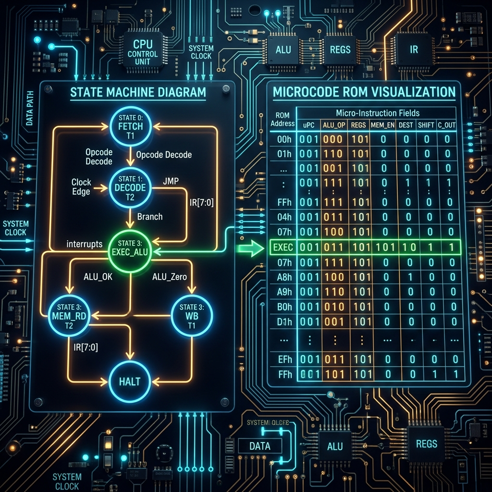

Introduction to Control Units
Welcome to Part 6 of our "Building an 8-bit Computer from Scratch" series. If you've been following along, we have successfully assembled the Arithmetic Logic Unit (ALU), the memory architecture (RAM and registers), and the initial stages of instruction decoding. Now, it is time to build the "brain of the brain"—the Control Unit (CU). Without a well-designed control unit, an 8-bit CPU is merely a static collection of isolated registers, adders, and logic gates that do absolutely nothing useful. The control unit breathes life into the system by orchestrating the movement of data between registers, directing traffic across the data bus, and commanding the ALU to perform specific mathematical or logical operations based on the fetched instruction.
Every operation in a CPU occurs in a precise, carefully orchestrated sequence known as the fetch-decode-execute cycle. The finite state machine (FSM) inside the control unit tracks which step of this cycle the CPU is currently in, triggering the exact control signals (like RAM_OUT, REG_A_IN, ALU_SUB, JUMP_ENABLE, etc.) at exactly the right time. In this comprehensive guide, we will delve deep into the theoretical underpinnings and practical implementations of the two dominant paradigms for designing this critical component: Hardwired Ring Counters and Microcoded ROM architectures.

Sequential Logic, Timing, and the Clock
Before we can understand the intricacies of a state machine, we must understand the heartbeat of the computer: the clock. The clock circuit (often built around an oscillator or a 555 timer in breadboard projects) generates a continuous, steady square wave. Almost all operations within our CPU are synchronized to either the rising (positive-going) or falling (negative-going) edge of this clock signal. However, a single machine instruction (like ADD A, B or LDA 0x05) takes multiple clock cycles to complete. We refer to these individual sub-steps as T-states (Timing states).
For example, a typical instruction cycle for a load operation might look like this:
- T1 (Fetch Cycle 1): The Program Counter (PC) outputs its current instruction address to the common bus. Simultaneously, the Memory Address Register (MAR) latches this value from the bus. Control signals asserted:
PC_OUT,MAR_IN. - T2 (Fetch Cycle 2): The RAM outputs the data stored at the address currently held by the MAR onto the bus. The Instruction Register (IR) latches this data. At the same time, the Program Counter is incremented to point to the next byte in memory. Control signals asserted:
RAM_OUT,IR_IN,CE(Count Enable for PC). - T3 (Execute Cycle 1): This step depends entirely on the specific instruction that was just loaded into the IR. For an immediate load like
LDI 0x0F, the lower nibble of the IR might be routed to the Accumulator. For an absoluteLDA, the memory address might need to be fetched first. - T4 (Execute Cycle 2): Further execution steps, such as directing the ALU to calculate a sum, and latching the result back into a target register.
- T5 (Reset): The sequence counter is asynchronously cleared, resetting the FSM back to state T1 to fetch the very next instruction. Control signal asserted:
STEP_RESET.
This sequential stepping is the absolute foundation of digital computation. The primary challenge in CPU control unit design is ensuring that these control signals are perfectly glitch-free. If a control line, such as RAM_WE (Write Enable), asserts for even a few transient nanoseconds too early due to propagation delays, invalid data might be latched into memory, causing data corruption and inevitable program crashes. This is why careful timing analysis and synchronous logic design are paramount.
Finite State Machines (FSMs) in CPU Design
At its core, a Finite State Machine is an abstract mathematical model of computation. It consists of a finite set of states, a designated start state, an input alphabet (the conditions that influence state changes), and a transition function that maps current inputs and the current state to the next state. In physical hardware, FSMs are constructed using a state register (a bank of flip-flops) to store the current state and combinational logic (AND, OR, XOR gates) to compute the next state as well as the immediate outputs.
There are two classic typologies of FSMs used in digital logic design:
- Moore Machine: The outputs depend only on the current state. This architecture is often strongly preferred in CPU control units because the outputs are synchronized strictly with the clock edge, completely eliminating the risk of combinational glitches from asynchronous, mid-cycle input changes. If a state is active, its control signals are stable.
- Mealy Machine: The outputs depend on both the current state and the current inputs. This configuration can lead to faster, more responsive systems (since the output changes immediately as soon as the input changes, without waiting for the next clock edge), but it risks introducing transient glitches if inputs change unpredictably during the active phase of the clock cycle.
In the context of our 8-bit computer architecture, the control unit acts fundamentally as a large, complex Moore machine. The "inputs" to this machine are the opcode bits (from the Instruction Register) and the conditional flags (like the Zero flag or Carry flag from the ALU, used for conditional branching). The "state" is the current T-state (T1 through T6). The "outputs" are the 16 to 24 distinct control lines that act as the traffic signals directing data flow across the system bus. Let's examine how to physically build this.
The Hardwired Approach: Ring Counters
A hardwired control unit eschews memory chips in favor of discrete logic gates (AND, OR, NAND, NOR) to directly decode the opcode and T-state into the necessary control signals. To systematically track the T-states, a Ring Counter is typically implemented rather than a standard binary counter.
A ring counter is essentially a circular shift register. Instead of counting in dense binary sequences (000, 001, 010, 011), it circulates a single active bit through a chain of flip-flops (100000, 010000, 001000, 000100). The enormous advantage of this topology is that the T-states are naturally "one-hot" encoded. You do not need an external binary-to-decimal decoder chip (like a 74LS138) to figure out if you are currently in state 3; you simply look directly at the output of the third flip-flop in the ring counter. If it's HIGH, you are in T3. It's incredibly straightforward and fast.
Let's consider how we generate a specific control signal, say REG_A_IN, using hardwired combinational logic. Suppose our architecture dictates that the Accumulator should latch data on T3 of the LDA (Load Accumulator) instruction, and on T4 of the ADD (Add Register B to A) instruction. The Boolean logic equation for the REG_A_IN signal would be:
REG_A_IN = (LDA_OPCODE AND T3) OR (ADD_OPCODE AND T4)We build this exact equation physically on the circuit board by taking the active-high output of the instruction decoder for LDA, AND-ing it with the T3 line from the ring counter, and then OR-ing the result with the output of the ADD decoder AND-ed with T4.
Pros of Ring Counters & Hardwired Logic:
- Blistering Speed: Combinational logic is incredibly fast. The signals propagate through a few gate delays (often less than 10 nanoseconds total), allowing for extremely high clock speeds. This raw performance is exactly why modern RISC (Reduced Instruction Set Computer) processors still heavily rely on hardwired control logic rather than microcode.
- Simplicity for Small Instruction Sets: If your CPU architecture only supports a dozen basic instructions, laying out the required AND/OR gates is straightforward, highly educational, and visually logical.
Cons of Ring Counters & Hardwired Logic:
- Complexity at Scale: As you add more instructions, addressing modes, and registers, the web of AND/OR gates becomes an unmanageable, sprawling rat's nest of wiring. Adding just one single new instruction might require rewiring dozens of interconnected gates.
- Extreme Inflexibility: If you make a logical mistake in your Boolean equations, or decide to alter how an instruction behaves, you have to physically rip out wires and rebuild the circuit board. There are no "software updates" for hardwired logic.
Example: 3-Step Sequence Generator in SQGATE
To demonstrate a simple, foundational state machine, here is a complete JSON representation of a 3-step ring counter built using standard D-type Flip-Flops in the SQGATE simulator. This counter loops endlessly through three states, providing discrete, one-hot T1, T2, and T3 signals.
{
"project": "SQGATE 3-Step Ring Counter",
"version": "1.0",
"components": [
{"type": "clock", "id": "clk", "x": 100, "y": 200},
{"type": "d_flip_flop", "id": "dff1", "x": 300, "y": 150},
{"type": "d_flip_flop", "id": "dff2", "x": 300, "y": 250},
{"type": "d_flip_flop", "id": "dff3", "x": 300, "y": 350},
{"type": "or_gate", "id": "init_or", "x": 150, "y": 100},
{"type": "button", "id": "reset", "x": 50, "y": 100},
{"type": "led", "id": "t1_led", "x": 500, "y": 150},
{"type": "led", "id": "t2_led", "x": 500, "y": 250},
{"type": "led", "id": "t3_led", "x": 500, "y": 350}
],
"wires": [
{"from": "clk.out", "to": "dff1.clk"},
{"from": "clk.out", "to": "dff2.clk"},
{"from": "clk.out", "to": "dff3.clk"},
{"from": "dff1.q", "to": "dff2.d"},
{"from": "dff2.q", "to": "dff3.d"},
{"from": "reset.out", "to": "init_or.in1"},
{"from": "dff3.q", "to": "init_or.in2"},
{"from": "init_or.out", "to": "dff1.d"},
{"from": "dff1.q", "to": "t1_led.in"},
{"from": "dff2.q", "to": "t2_led.in"},
{"from": "dff3.q", "to": "t3_led.in"}
]
}Notice how the output of the third flip-flop (dff3.q) wraps all the way back around to feed into the input of the first flip-flop via the OR gate. This is what creates the continuous "ring" effect.
The Microprogrammed Approach: Microcode ROM
If hardwired logic is a rigid, physical manifestation of the state machine, microcode is its software equivalent. In a microprogrammed control unit, the exact combinations of control signals for every possible T-state of every possible instruction are pre-calculated and stored in a dense memory chip, typically an EEPROM (Electrically Erasable Programmable Read-Only Memory) or a fast parallel Flash memory chip.
Instead of relying on sprawling arrays of logic gates to compute REG_A_IN dynamically on the fly, we use the Instruction Opcode combined with the current T-state as a literal memory address to look up the correct control signals in the ROM.
Here is a detailed breakdown of how the addressing scheme works in a typical 8-bit architecture:
- The Instruction Opcode (typically 4 to 8 bits wide) originating from the Instruction Register provides the higher-order address bits. For a 4-bit opcode, this would connect to address pins A4 through A7 on the EEPROM.
- A simple, reliable Binary Counter (such as the ubiquitous 74LS161 synchronous counter) provides the lower-order address bits, representing the current T-state sequence. This would connect to address pins A0 through A2, allowing for up to 8 distinct T-states per instruction.
- For conditional instructions (like Jump if Zero), the ALU flags (Zero, Carry) are fed into additional address pins (e.g., A8 and A9). This allows the ROM to branch to entirely different control words depending on whether the flag is set or cleared.
- The resulting concatenated 10-bit or 11-bit address points to a specific, unique byte (or multiple parallel bytes, if control lines exceed 8, requiring a 16-bit wide ROM array) within the EEPROM.
- The parallel data outputs of the EEPROM (D0-D7) directly drive the control lines of the CPU bus, commanding the registers and ALU.
For example, assume the LDA opcode is 0001, and the sequence counter currently indicates T-state 3 (011 in binary). The resulting combined ROM address is 0001011 (or 0x0B in hexadecimal). We program the memory byte residing at address 0x0B in the ROM to contain exactly the binary bit pattern required to assert the RO (RAM Out) and AI (A Register In) control lines. When the address is presented, the ROM instantaneously outputs this pre-programmed pattern.
Pros of Microcode ROM:
- Supreme Architectural Flexibility: Altering an instruction's behavior, fixing a fundamental bug, or adding entirely new complex instructions requires absolutely zero hardware modifications. You simply recompile your microcode generation script and flash a new binary file to the EEPROM. It completely abstracts control logic into software.
- Wiring Simplicity: The physical control unit is vastly simplified. It essentially devolves into a ROM chip, a binary counter, and perhaps an instruction register. The massive, error-prone web of discrete AND/OR gates is entirely eliminated.
- Compact Footprint: High-density ROMs can store thousands of complex control words in a very small physical footprint, enabling instruction sets that would be impossible to hardwire on a hobbyist scale.
Cons of Microcode ROM:
- Inherent Speed Penalties: ROM access times (often ranging from 70ns to 150ns for standard older EEPROMs like the 28C16) strictly dictate the maximum theoretical clock speed of the CPU. A hardwired control unit will virtually always be faster because gates switch in just a few nanoseconds.
- Wasted Memory Space: Many addresses in the ROM matrix may go completely unused (for example, T-states 6 and 7 for simpler instructions that inherently complete in just 4 or 5 cycles). This leads to sparse memory utilization, though ROM space is cheap.
Handling Conditional Branching
One of the most fascinating aspects of FSM design is handling conditional instructions, such as JZ (Jump if Zero) or JC (Jump if Carry). The CPU must execute a jump (loading a new value into the Program Counter) only if a specific flag is active; otherwise, it must simply proceed to the next sequential instruction.
In a microcoded system, this is elegantly handled by wiring the ALU's flag outputs directly to the highest address pins of the microcode EEPROM. For instance, the Zero flag might be wired to address pin A8.
If the CPU fetches a JZ instruction, the lower address bits (A0-A7) point to a specific base region of the ROM. If the Zero flag is 0 (meaning the previous ALU operation did not result in zero), A8 is 0, and the ROM outputs control signals that simply increment the Program Counter and end the cycle. However, if the Zero flag is 1, A8 becomes 1, instantly shifting the active ROM address to an entirely different memory page. This new page contains control words that assert RAM_OUT and JUMP_ENABLE, effectively executing the branch. It is a brilliant, zero-latency method of incorporating conditional logic directly into the memory map.
Comparing Ring Counters vs Microcode ROM in Practice
For hobbyists, engineers, and students building 8-bit computers on breadboards (such as the immensely popular Ben Eater SAP-1 architecture), the Microcode ROM approach is almost universally preferred and recommended. The sheer density of discrete wires required for hardwired logic becomes overwhelming and unreliable when building physical hardware manually across multiple breadboards. A single pair of 28C16 EEPROMs can effortlessly replace dozens of 74LS series logic ICs and literally hundreds of delicate jumper wires.
However, examining history, the choice was not always so clear-cut. The legendary MOS Technology 6502 microprocessor (the beating heart of the Apple II, Commodore 64, and the original Nintendo Entertainment System) utilized a brilliant, highly optimized hybrid approach. The designers realized that a full traditional microcode ROM was far too slow for their performance targets and consumed too much precious silicon real estate. Instead, the engineers utilized a Programmable Logic Array (PLA) intricately coupled with a dynamic shift register.
The PLA functioned essentially like a highly compressed, optimized microcode ROM, directly decoding instructions into a tight matrix of control lines using custom-masked silicon pathways. This architectural genius allowed the 6502 to be significantly faster and cheaper to manufacture than its microcoded contemporaries like the Motorola 6800.
Interestingly, in modern hyper-scalar processor architectures, x86 CPUs (like Intel's Core series and AMD's Ryzen line) still extensively use microcode internally. Because the legacy x86 instruction set architecture (ISA) is so massive, convoluted, and variable in length, incoming instructions are fetched by a complex front-end and then actively decoded and translated into smaller, simpler "micro-ops." These uniform micro-ops are then fed into and executed by a blisteringly fast, hardwired RISC-like execution engine core underneath. It perfectly marries the best of both worlds: the infinite flexibility of microcode for handling complex legacy instructions, paired with the raw execution speed of localized hardwired logic.
Implementation and Simulation in SQGATE
When modeling this intricate FSM logic within our SQGATE browser simulator, constructing a full EEPROM matrix is undeniably the cleanest and most robust method. You can simply drop a ROM8 or ROM16 component onto the canvas, attach a synchronous binary counter to its address lines, and map the resulting data outputs directly to your system bus transceivers.
Because the SQGATE environment allows you to directly import ROM contents as formatted JSON arrays, you can write a simple external Python or JavaScript script to generate your entire microcode matrix automatically, and then inject it directly into your simulation. This bypasses the tedious, error-prone manual wiring process and allows you to instantly test sweeping architectural changes with a single click.
In the upcoming phase of our build series, we will fully integrate this newly designed control unit with the rest of the CPU, effectively closing the architectural loop. We will also pivot slightly to construct a dedicated Hexadecimal Display I/O module, allowing us to finally see the numerical results of our CPU's calculations in real-time, rather than relying solely on interpreting binary arrays of blinking LEDs.
Conclusion & Next Steps
The control unit represents the profound dividing line between a mere collection of logic gates and a truly programmable computer. Whether you ultimately choose the blistering, raw speed of hardwired ring counters or the elegant, software-driven flexibility of microcode ROM, designing and debugging the finite state machine is unequivocally one of the most rewarding parts of computer architecture. It is the exact moment your machine stops being static, inert hardware and begins actively following your instructions.
Stay tuned for Part 7, where we will tackle memory-mapped Input/Output (I/O) architecture and build our custom Hex Display module.